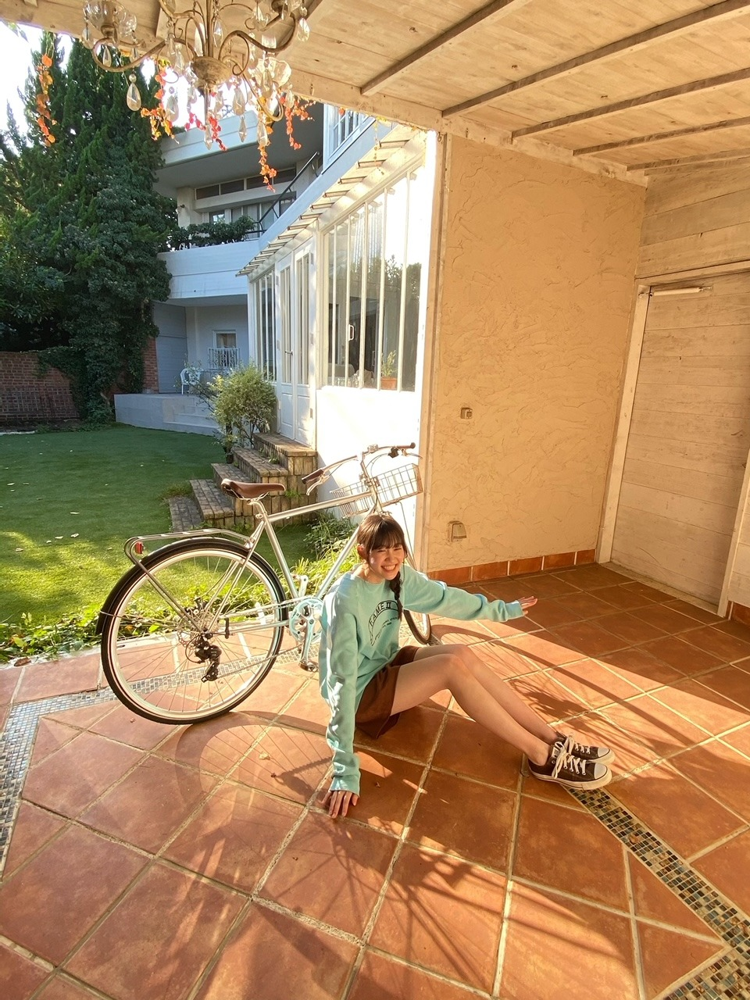

2020/1216Wed光 松尾美佑
寒いですね
でも太陽が元気で良いですね╭│ᵕ̈│╯
千葉県出身
高校2年生
16歳の
松尾美佑です
まつおみゆです
╭│ᵕ̈│╯╭│ᵕ̈│╯╭│ᵕ̈│╯
皆さんクリスマスツリー飾りました？
松尾家では、まみーこと母が1人で飾ってくれていました☀︎
今年ももうすぐ終わっちゃうなんて
信じられないですほんと
はやいはやい
┏|∵|┛
現在発売中のヤングマガジンさんに
新4期生5人が掲載させて頂いています！
オフショットです¨̮



すっごく太陽が綺麗な日でした〜ˊᵕˋ
私は水色でした♪
是非見てみて下さい!!
そして、
レコメン！さん、ありがとうございました！
のりさん本当に優しいお方で、レイちゃんと柚菜ちゃんとも楽しくお話出来て幸せな時間でした！
収録が終わったあとに木の椅子にサインをさせて頂いたのですが、
これまで出演された方々のお名前があって、そこに自分もサインをさせて頂けて本当に嬉しかったです！
ありがとうございました！
⸜（⍥）⸝♡
最近特に理由は無いんですが
やたらノートを買ってしまいます。
鍵がついているのがお気に入りです。
書くことはないんですけど、本みたいなノートが大好きで集めちゃいます。
何書いたらいいですかね
やっぱり夢とか書いたら素敵なんでしょうか
あとペンもやたらと集めちゃうんです
色付きの。
蛍光ペンの形をしてる、でも蛍光してない色
グレーがお気に入りです( ఠ͜ఠ )
小学生の時はやたらと付箋を集めていました
使わないのにね
今は使いますけど。
将来のために集めてたと思えばいいですかね
あ！！！！
携帯、新しくなりました！
自由に文字が打ち放題です！！
これで安心です
絶対画面割らないぞ。
強い気持ちでこの子と生きていきます。
前回のブログの1枚目の写真、
見えていなかったみたいで。
今度こそ！！

見えますかね( ㆀ)？
好きな写真〜⸜❤︎⸝
お返事もまた今度ゆっくり出来たらいいなと思ってます(*ˊᵕˋ*)
明日は〜
なお〜〜〜〜〜〜〜〜〜
可愛いトナカイのカチューシャを見つけてね、
すっっごい可愛いの。
ho-ho-ho-
手づくりクッキーと共にココアを置いておいてくれたら幸せを届けるよ
みゆサンタより
私は毎年サンタさんを追跡してます
楽しいので皆さんもやってみて下さい
去年は妖精語を習いました。
もう忘れちゃいました。
また勉強しなおします。

幸せだ〜の顔( ᵕᴗᵕ )
それでは！また5日後！
もう雪が降ってる地域もあるとか！
あったかくして下さい( ´͈ ᵕ `͈ )
ミュウでした¨̮
ばいっっっっっっ( Ꙭ )/''
コメント(212)
モバメ始まった絶対とる！
えんとつのあるお家は気をつけ
くださいね。
さて。
サンタさんにまつわる
お話をひとつ。
昔、カナダ人の友人から
聞いた話しですが。
実はサンタさんのお家は
カナダの管轄にあり
なんと。
郵便番号もあるんです。
どんな郵便番号だと
思いますか:)？
意地悪なので教えません:]
私から美佑さんにプレゼント
をあげますね。
この時期にピッタリの
クリスマスソングです。
最初がアーティスト名。
後は曲名です。
どれも、とっても甘く
とろけそうになる歌声
をしています。
いくつかおすすめを
ご紹介いたします。
1.Carly Rae Jepsen（カーリー・レイ・ジェプセン)
Last Christmas
2.Eric Benet Ft. Faith Evans(エリック・べネイ フィーチャリング. フェイス・エバンス)
Christmas Without You
3. Ashanti (アシャンティ)
Christmas Time Again
です。
さて。
美佑さんはどれか気に入って
くれるでしょうか。
いや。
必ず全て気に入ってくれる
はずです。
甘い曲で。
ステキな夜をお過ごし
ください。
あ。
ミュウちゃんは
まだ甘いお菓子の方が
嬉しかなLOL
光が似合うね！
次は携帯絶対割らないようにきまつけくださいね〜〜
サンタの追跡楽しそうですね！！笑 妖精語またおしえてほしいです。
自分も手作りクッキーとココアおいときますねーーー笑
次のブログたのしみにしてまーす。
みゆちゃんは笑顔もかわいくてスタイルもよくて素敵なのでグラビアの仕事が増えると嬉しいです！
グレーのペンなんてあるんだね！
ペン先が尖るクルトガはあんまり好きじゃなくて、グリップがぷにぷにのシャーペンをよく使ってました。
もうクリスマスか
一年早いね！
今年は余計かな
姫脚長い！
レコメン聞いたよ
耳が癒しでした。
サンタの追跡笑
携帯新しくなって良かったね！
僕も新しくしたい〜〜〜
オフショットもありがとね！
脚長すぎ（笑）
いつも美佑ちゃんの笑顔、ミュウスマイルに癒されてます〜
これからもよろしくね〜
じゃあね〜
携帯、良かったね！
・前も書いたんですけど、男性の髪型、髪色の好みあったら今自分迷ってるので参考にさせてください！！笑笑
・ハマってる映画、アニメなんかあったら教えてください〜
コメントたくさんさせてもらいますね笑
ブログ更新ありがとう！
今回のブログも楽しみにしてました！
今日は本当に寒かったね～
自分のところはうっすら積もったぐらいだけど雪が降ったよ！
降るとしても山の方だけかなと思ってたから完全に油断してた笑
でも雪が降ると本当に冬を実感するよね！
クリスマスツリーは小さい時に飾ってたかな｡
たぶん探せばあると思うけど､最近はお店とかで見かけたりするくらいかも…寂しい笑
ヤンマガもちろん買ったよ！
オフショットもありがとう！
つい買っちゃうものってあるよね！
自分は学生の時はよくシャーペン買ってた笑
携帯新しくなったみたいで良かったね！
やっぱり画面が割れてると打ちづらいもんね笑
今回も素敵なブログをありがとう！
次回のブログも楽しみにしてるね！
それじゃまた！
レコメン聴いたよ〜
30分だけだったけど番組の雰囲気的にもめちゃくちゃ楽しかった！
「床は友達です」って中々良いキャッチフレーズでは…？笑
携帯が新しくなったワクワク感(?)で割らないようにお気をつけください笑
今年ももうあと半月、体調崩さないように元気で過ごしてね〜〜！
今年はなんやかんやあって例年よりも早く時が過ぎる感覚だったなと年末になってよりそう思うことが多かったかな〜。もうクリスマスやお正月の時期が来ると思うとワクワクする反面、時の流れの早さに驚愕します笑。お！ついに携帯新しくなったのね！ヘアアイロン同様、どうか丁重に扱ってくださいませ笑。
5日後楽しみにしてます！おつかれさん！
みゆた〜ん♪
スタイル良すぎて笑っちゃう（笑）
YouTubeで後でレコメン聴きます！
寒いから体調に気をつけてくださーい！
埼玉の陽一です。
寒いね～～
大雪になってる地域もあってびっくり。冬だね
俺はこの季節好きだよ(^^)d
夕方の空めっちゃ綺麗だよね～～～
ヤンマガまだ見てなかったので明日見て感想またコメントします。
てか、みゆちゃんスタイル良すぎ！モデルになれるじゃん(^-^)
こないだのレコメンもそうだけど、みゆちゃんは楽しそうに話すから好きです。
showroomとかまたぜひやってね。楽しみにしてます(^○^)
ばいっっっっっっっ( Ꙭ )/''
そろそろクリスマスやね。
うちはそろそろツリーが出そう。
飾り付けは俺の担当ではありません笑
クリスマス楽しみすぎ！！
今年はお家でゆっくりしよかな。
ヤンマガゲットしましたー！
ミュウちゃんのスマイルの良さが際立ってて、めっちゃ良い写真やった！！
表情も好きすぎる。
ミュウちゃんの足長すぎん？笑
レコメンお疲れ様！！
ミュウちゃん楽しんでたね。
ライブのことも聞けて嬉しかった。
ミュウちゃんの声好き。
またラジオ出てほしい！！
最近寒すぎひん？
昨日とか大阪でも雪降ってたで笑
風邪ひかんように気をつけて。
次のブログも待ってます。
いつもありがとう。
太陽が元気だと安心しますね～
もうツリー準備の時期ですねー！
もう年末なのもビックリですよ♪
ヤンマガさん光いっぱいですね！
オフショットも水色な気分です✨
レコメン！さん優しさ沢山でした！
木の椅子サインも誇らしいですよ✌
新しい文房具にもトキメキますね！
ライブ写真からも元気貰えました☆
ミュウちゃん笑顔もサンタみたい～☺
でも確かに空気はクリアで太陽光がダイ
レクト。
松尾家はモダンな家族なんですね。
今回の顔文字、ノギスキの時のロボット
ダンスをするかえでちゃんみたい。
オフショット。ノースリーブのワンピが
綺麗なお嬢様。
レコメンのメガ盛祭、毎日楽しいです。
やっぱりメンバーで出演するとワチャワ
チャしてていい。
今、寝る前のココアにハマってます。寝
起きの調子が、いいです。
イェーイv(・∀・*)
イェーイv(・∀・*)
ﾜｧ───ヽ(*ﾟ∀ﾟ*)ﾉ───ｲ
ヤングマガジンまだ買ってない...(；＿；)
Beautifulな感じで写ってそうだ...
アンダーライブお疲れ様でした！これからも頑張ってください
いくこういうパターンもあるのだ
オフショットも可愛いね！最高です！
私は小学校の頃にメモ帳とシール集めてたなー。交換するのがめっちゃはやっとったんよね。
体調には気をつけてね。
オフショットありがとう！璃果ちゃんや瑠奈ちゃんもそうだけど、最近の若い子は脚がすらっと長いですよね！羨ましい。
レコメンお疲れ様でしたね、会話が弾んで何よりですよね。仲の良い感じがして良かったです。
美佑サンタさんはトナカイのカチューシャを着けてミニスカのやつで是非自分の夢の中にも出てきて下さい。
今朝起きる時、部屋の中が外かと思うくらいに寒くて布団から出られなくてエアコンをつけてんだけど、エアコンも今朝は暖かい空気が出るまで時間がかかり、二度寝してしまおうかと思いましたがそうもいかないので、眠りそうになったら映画とかの雪山のシーンでよく見る「寝るな！」を一人二役で部屋があったまるまでやってました。
新しい携帯大切にどうぞ！
おやすみ
今年も早いものであと１５日で終わって、１６日後には「あけおめ～ことよろぉ～！ヽ(^o^)丿」って言ってる季節になりましたなぁ～。
（まだ、クリスマスすら超えてない事に最近驚きを隠せない僕だけど(笑)( *´艸｀)）
それだけ、今年は「４期ちゃんが勢ぞろいして、その１年に僕も気持ちは加わってたんだなぁ～」って思いながら過ごしてたら、１日が経つのが遅いのか？早いのか？分からなくなってきちゃった(笑)( *´艸｀)
ミュウ(>o<)ちゃんも、携帯新しくなったみたいで。「眉間に落としてもいいけど、地面にだけは落とさないでね(笑)( *´艸｀)」
眉間＝自分が痛いだけ。 地面＝携帯と思い出が一瞬でなくなっちゃうから。
今年は「４期ちゃん１６人LIVE」で「４番目の光」ならぬ「１６人の光」が、輝いてたしそれが「光の柱」となって、ファンの人達に届いてたと思うよぉ～( *´艸｀)
ミュウ(>o<)ちゃん自身も、今後の「乃木活の糧」に出来たみたいで、お互い「win win(笑)( *´艸｀)」だねぇ～。
（どこかで聞いた事があるぞぉ～そのセリフ～って言わないの(笑)）
最近の５人は「ヤンマガさんのオフショット」を連発して載せてくれてるねぇ～。最近の５人のブログは「ヤンマガさん特集をブログでもしてるんかい？」っていう位、口をそろえて言ってるし書いてるから、思わず微笑ましくなっちゃった。
ミュウ(>o<)ちゃんは「水色」かぁ～( *´艸｀) ７色だったら「虹」が作れるんだけど５色だから、ちょっと足りないね。
前回のブログ写真。１枚目だけが見れてなかったから、どういうの載せたのかなぁ～って思ったら、１６人との思い出の写真だったのかぁ～(●´ω｀●) 良き良きですなぁ～。
携帯も新しくなり、来年早々から「ミーグリ」にも参加出来て、楽しい事が連続して起こってるけど、最後の写真みたいに「笑顔を絶やさずに、レイちゃんみたいに楽しく」乃木活をこれからもしていってね。
僕は、４期ちゃんLIVEだけじゃなくて、毎日の乃木活。４期ちゃん１６人の事を。そして、３期生ちゃん。乃木メンの事を思いながら気持ちはいつでも、どこにいてもすぐ傍にいるんだからねぇ～。それだけは忘れないでね☆彡
それじゃあ、次のブログもめっちゃ楽しみにしてるねぇ～♪また5日後に会おうね☆彡
明日も一日！一緒にお家時間を楽しもうね♪大好きだよ♪ミュウ(>o<)ちゃん☆彡
そしてこの前はコメント返してくれてありがとう
本当に嬉しくて色んな人に自慢してる！！！！！
やっぱりロンバクの方が簡単なんだ！！一緒だ！！
今は、ロン宙が安定してできるように頑張ってる！！！
あと21日誕生日なんだ
良かったらおめでとうって言ってくれると嬉しいです
〜質問〜
この時期になると乾燥してハンドクリームとかボディクリームが欠かせないんだけどみゆちゃんは、何のクリーム使ってますか？？
冬といえば鍋！一番好きなお鍋の味は何？？
福岡にきてしてみたいことは何ですか？？
良かったら教えてください！！
私もみゆちゃんみたいに可愛くてスタイル抜群な女の子になれるように頑張ろう
ポメしおと俺は、ずんどうで
チョコチョコと歩く仲間として
ポメ仲間になっている
そしたら私も持ってるーーー！！
初コメだから答えてくれたら嬉しいな！
みゆちゃん今日も可愛いです。
みゆちゃん今日も１日お疲れ様です。
今日はお仕事でした。
今日は疲れて大変でした。
明日はお仕事お休みなのでゆっくりと休みます。
土曜日からは六連勤頑張ります。
これからもお仕事頑張って下さい。
自分もお仕事頑張ります。
これからのブログを楽しみにしてます。
もう4期生ライブから一週間以上たったね！！今年もあと少し、時間が過ぎるの本当早いね。。
美佑ちゃんのブログに載せてくれたオフショット、美佑ちゃんの透明感とかキラキラ感が出ててすごい素敵！！
足長過ぎる！！
モデルさん！！
質問なんだけど、美佑ちゃんはコスメとか自分で選んでるの？？誰かに聞いたりもらったりしてる？？
このブログの写真のリップめっちゃい色だったので
気になりました！！
ぜひ教えてね〜
おもちより！
携帯新しくなって良かったね。今度は割らないようにね笑
あとノギサカスキッツ観たよ〜ミュウちゃんのダンスショーだったね笑。たくさん美佑ちゃんがみれて楽しかったです‼️
美佑先生、可愛い♥バク転姫っ
そして、『４期生ライブ』おつです。
年末年始、ガンバレー
see you！ (^^)/
オフショットも感謝です！
鍵付きノート、初めて知りました
その時々思いついた大事なことを書きたいね
後で見返すときに、番号を忘れないようにしないといけないね（笑）
レコメン、楽しかったよ！
レイちゃんの「おまつ」って呼び方、かわいいね！
今度、チャンスあったら美佑ちゃんのツリー姿も見てみたいな
北の方とか日本海側は雪がすごいね～
あったかくして寝てくださいね
じゃあまた！
たまには
寒い日が続くね〜
オフショットも良いね！！
スタイル良すぎて_(:3 」∠)_
もうすぐクリスマスか〜
美佑ちゃんサンタに会いたいな(*´-`)
5日後のブログ更新も楽しみに待ってる(^^)
体調に気をつけてお仕事頑張ってね！！
幸せだ〜の顔最高にかわいくてこっちまで
幸せお裾分けしてもらっちゃった(*´-`)
まみーこと母様が飾り付けしてくれたツリーに願い事添えよう
将来のために集めた付箋とノートとペンで！笑
関東も寒いけどミュウちゃんも体調気をつけてね
もう今年も僅かですね、早い！
レコメンお疲れ様でした。
ヤンマガも買いましたよ、スウェット可愛いな。
へぇぇ 木の椅子にサインしたんだ なんかノーベル賞みたいな＊
幸せだ～の顔 いいね。
白い衣装とターコイズの衣装と、ミュウちゃんのサイリウムカラーだね(^^)
ここ数日で一気に寒くなってきたので、体調気をつけて活動してくださいね。
今年もあと少し、やり残したことがあれば教えてくださいー。
『ヤングマガジン』拝見しました。爽やかな色彩がお似合い。オフショットもありがとう。
『レコメン！』お疲れ様。優しく迎えられ話が弾み椅子にサインを連ねる事が出来て何より。
ノートに夢を書いておくなら実現へ向けて努力に励み易いかも。
サンタを追跡するならドローンかな。撃墜されないと良いな♪
中1ぐらいまでは飾ってたかもw
コメントする

PROFILE
新4期生リレー
202104
| SUN | MON | TUE | WED | THU | FRI | SAT |
|---|---|---|---|---|---|---|
| 1 | 2 | 3 | ||||
| 4 | 5 | 6 | 7 | 8 | 9 | 10 |
| 11 | 12 | 13 | 14 | 15 | 16 | 17 |
| 18 | 19 | 20 | 21 | 22 | 23 | 24 |
| 25 | 26 | 27 | 28 | 29 | 30 | |

初めてコメントします！！
僕もツリー飾りました！妹が息であかりがつくって勘違いしてますw
なんと僕の住んでる所で少しだけど雪が降りました！
今年はホワイトクリスマスになるといいですね！！
最近、急に寒くなって薪ストーブをつけ始めました！めっちゃ暖かい！
みゆちゃんも暖かくして風邪には気をつけて！！
次も楽しみにしてます！！